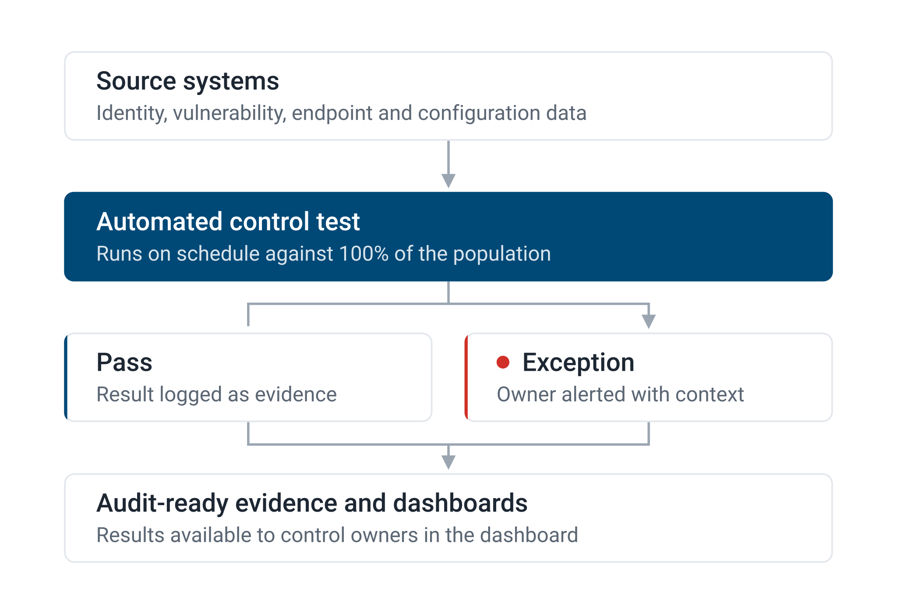

Enterprise Tech Backlog · [ETB-ID]
Automated monitoring for cyber controls
This initiative onboards cyber controls from periodic, manual testing to continuous, automated monitoring, so control owners know their controls are working every day.
What is automated control monitoring?
ACM uses source-system data and automation to test whether a control operated as designed. It runs continuously and across the full population, instead of sampling a handful of instances once a year. Failures surface in days instead of quarters, and control owners spend less time gathering evidence.
- Tests run on a schedule against source-system data
- Every result is captured as audit-ready evidence
- Exceptions route straight to the control owner to resolve
